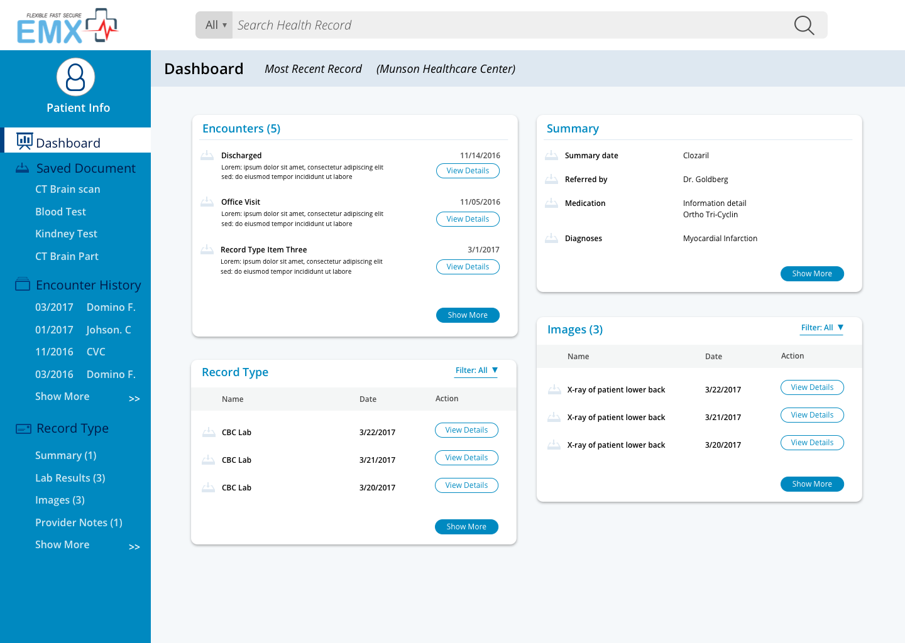
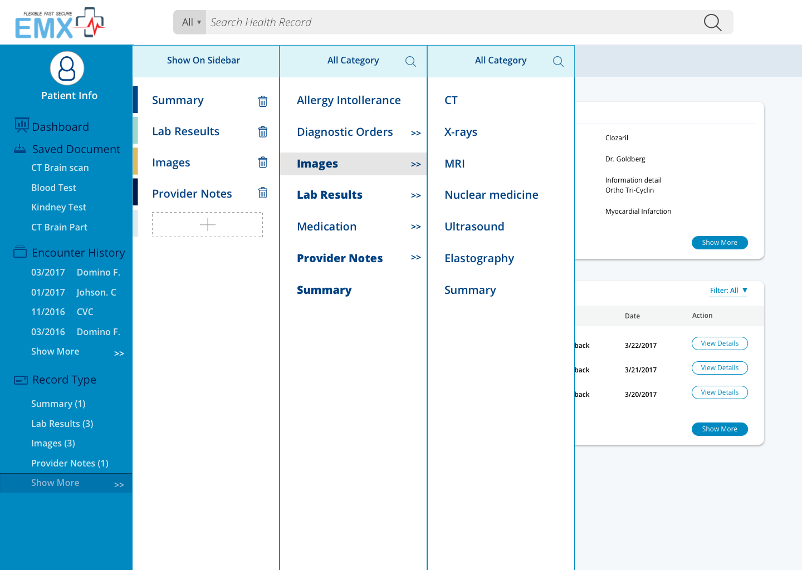
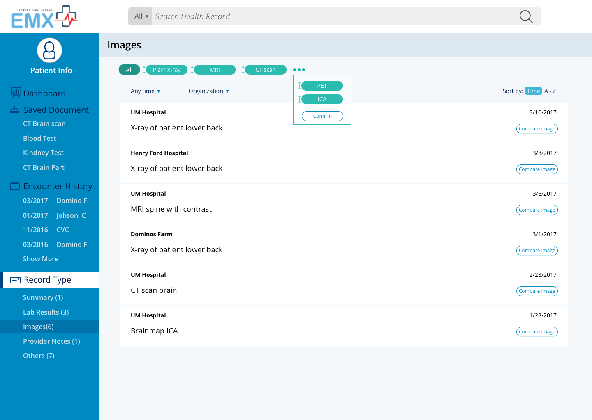
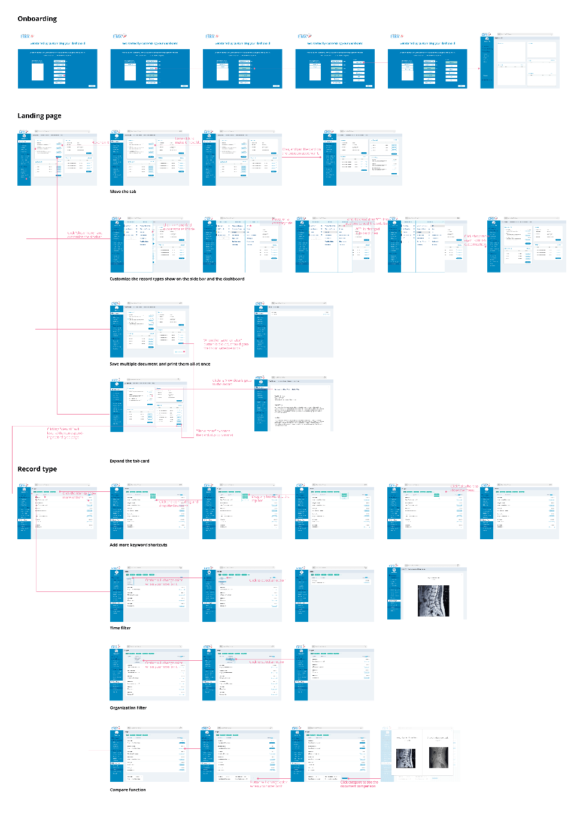

Project Overview
Summary
EMX Systems is a early stage startup healthcare company based in Michigan developing a health information exchange platform to improve the process in which healthcare information transferred between healthcare providers using different electronic medical records (EMR) systems. Their planned platform includes an intranet web application in which doctors and other healthcare professionals can securely access patient records no matter which EMR system it originated from. As a member of the UMSI Design Clinic, I, along with four other designers, were tasked with designing the complete user experience for their web application.
My Role
Completing this project was a team effort, and I contributed during every step of the process. I interviewed two physicians, analyzed our collective interview data, and developed our user journey. During the prototyping phase, I wasresponsible for designing the dashboard and the individual record screen. I also lead the process for developing a UI component library in Sketch to improve our team’s prototyping speed
The Challenge
The Challenge
With his decades-long career as a doctor as evidence, our client believes that current electronic record (EMR) solutions are not designed to meet the needs of healthcare providers. Many doctors have at least one complaint about their EMR. Systems are often are selected based on the needs of the hospital administrators, such as the ability to bill patients more efficiently.
Our client believes that a more provider-friendly system can be created. His new company, EMX Systems, aims to supplement existing EMRs by providing fast, secure patient data access at the point of care. Fundamentally, he challenged our team to solve the following problem for the EMX portal application:
How can a healthcare record system be design to better fit care providers’ needs?


Our Approach
We used a user-centered design approach where users were involved at every step of the process. We conducted user research to identify problems, ideated to come up with multiple solutions, created a prototype based on our best idea, and validated our idea using usability tests. Based on test results, we iterated on our prototype. For this project, we completed four design iteration cycles.
User Research
User Interviews
In order to better understand how healthcare providers actually used EMRs, we conducted 10 interviews with healthcare providers. Our interviewees group included a mix of doctors, nurses, and medical students.
We used a contextual inquiry-based approach to interviews, in which we visited interviewees at their office to ask questions their EMR usage experiences and observe them interacting with their current EMR.* Afterwards, we synthesized our interview data by building an affinity diagram.
*Interviewees shared their own medical data or used data from patients who signed HIPAA waivers for this project.

The digital version of our affinity map, used to group our interview data.
We learned the following for our interviews:
Too much clutter: Interviewees disliked that their current EMR system shows them too much irrelevant information to their job.
UI doesn’t match the workflow: A higher degree of UI personalization is needed to match user’s workflows.
Quality of outside records is inconsistent: Records received in EMRs from other systems are often scanned as images and therefore unsearchable, with varying levels of image quality from very good to very poor.
Too much complexity for needs: Learning a new EMR system takes too long, and providers feel unproductive spending time searching for information. One interviewee noted that he need to take a multi day workshop to learn a new EMR system when it was first implemented at their hospital.
Double work: If a lab or imaging result can’t be found in the current system, it can sometimes be performed again because requesting the document can take too long.
Survey
Although interviews provided in-depth insight into EMR usage experiences, we also wanted to get a broader overview of the reasons providers access their EMRs. For that reason, our team designed a survey on EMR usage which was taken by 20 medical professionals at the University of Michigan hospital system.
Based on our survey, we learned that:
Viewing the result of imaging studies (1), imaging reports (2), and lab reports (3) were ranked as top three most common reasons for a practitioner to view a patient record.
75% of respondents viewed the ability to see outside records at the point of care as very important.
Providers were generally dissatisfied (60%) with asking patients to bring in their own records before an encounter.
Personas
Using our research, we developed personas to represent the behaviors of our users as we moved into the prototyping phase. We also created a journey map to visualize user workflows in a concise manner.

Our personas we generated from conducting user interviews

Our journey map, used to visualize one of our persona's workflow
Ideation
Our team used a parallel design approach to coming up with design solutions. Each designer on our team created rough wireframes for multiple ideas and then pitched each idea to the team for feedback and critique. Afterwards, we reviewed all ideas that were pitched and created one collaborative wireframe using our individual ideas as references.

Some of the sketches created along the way
Design Solution
Design Goals
We first defined three problems which our design should aim to solve.
Place the doctor-patient relationship first
Our design should focus on improving the speed and efficient for doctors when they see their patients. The aim of our client’s product is to minimize delays in patient care – our design should match that goal.
Reduce the clutter
Our UI design should be adjustable so that users can remove the information they don’t need. Make sure that our users can find what they need faster.
Be flexible with the users
In order to integrate with users’ workflow, we need select features that match how patient documents are actually used.
Our Solution
Dashboard: A running timeline of the patient’s history
When providers meet patients, especially for the first time, they want to know the medical history of that patient. This will involve asking patients directly, but patients can miss details that are important to making a diagnosis. What can done so that providers check that they are getting the full picture of a patient’s history?
The dashboard is designed to allow healthcare providers to see a patient history at a glance. Information is organized as in a combined feed as well as one seperated by record type.

Rationale
Dashboard design allows providers to quickly find the latest records for the patient, which tend to more important for a patient’s current visit.
Splitting in the catagories allows different different providers to look for specific types of records first. This is important because different types of specialists want different information.
Combined encounter history on sidebar ensures that information patient forgets to share still gets noticed, even when is not part of the main dashboard area.
Dashboard Customization: Increase the level of personalization for each specific doctor’s practice
Different providers see different information as important. It would be futile for our team to attempt to select what type of records should appear on the dashboard since any decision we make would not acommedate many of our users. How we accommodate different needs for different doctors?
Dashboard customization gives EMX system the flexibility for users adjust the dashboard catagories to fit an individual provider’s workflow while still maintaining a clear information hierarchy that makes the page easy to skim.

Rationale
Side out menu design hides some of the complexity from providers who are less tech savvy while providing does who are interested in customization a large degree of control.
Splitting types into hierarchial catagories enables users to follow the information scent to locate what they want.
Save for later: Keeping track of patient information
Providers typically look at multiple different types of documents making a diagnosis. In most EMR systems, this means multiple searches through the patient’s data to find all the documents they need. How our system be designed so that providers can keep track of multiple documents at once?
Our save for later feature allows providers to mark documents they find important so that they can quickly refer back to several documents very quickly.
Rationale
Save button next to documents is simple and easily undoable to make the process of saving as fast as possible with the ability to undo mistakes easily.
Save for later button on bottom right corner allows providers to jump to their saved documents in one click.
Results filtering: more powerful searching for providers
We learned from interviews that providers will often use their EMR’s search feature to find documents that they dont immediately find. However, search can return too many results, which the provider when has to go through to find what they are looking for. How can we make searching faster for providers?

Rationale
Filtering empowers users to narrow down their results further
Available options hint at if their search is on the right track.
Design Iteration
Based on our meetings and wireframes, we developed a rough prototype of the interface to show to the client for feedback.
We used this iterative cycle to continuously update and introduce new features into the prototype.
Refining the Dashboard Design
We understood from research that the recent encounters were important for doctors to understand a patient’s history. But after usability testing, we also learned that different practices look for different types of records. As such, the dashboard evolved to present timelines for multiple records in addition an overall encounter history.

evolution of the dashboard
Language Differences
We learned from testing that some of the terms we used had be modified because they held specific meanings in our users’ domain. In our initial prototype, we used the term “history” as label a list of encounters it turned out that it was the wrong word to use. One user said, “When I see the word history, I think of the history of this patient’s diagnosis.” It turned out our label was confusing users!

Changes to the labelling based on usability test findings.
Adjusting for limitations
Viewing labs results is a common reason for a provider to access their EMR. For that reason, our initial designs displayed content from lab results in the dashboard. This was changed after learning that lab results can very long or scanned as image. In both cases, information would be difficult to pull from the actual document, so our design was changed to reflect this technical limitation.
Information showed for tests was reduced after learning about technical limitations.
Deliverables
UI Pattern Library
We developed a color and typographic guide to improve during our last iteration cycle to improve the consistency of our screens and to create unified visual system for EMX Systems. At the end of the project, the library was given to the client as deliverable to aid with development.


Interaction Map
A interaction map was also included with deliverables.
Click to here to view hi resolution (PDF)

Interactive Prototype
The final version of our interactive prototype on InVision was included with our deliverables. A link to this prototype can be given upon request.
Outcomes
We delivered a full InVision prototype of our project to our client, detailed UI specifications, and a navigation map. After some minor visual tweeks, our client was extremely satisfied with our work and hopes to incorporate our design into the development of their product.
The result is an excellent implementation that we can build on the EMX service platform, well done. The specifications certainly help, making our bootstrap implementation quite natural. I’ll be building out a demo ready version of your design and hope to use to as an example of how providers and designers can come together to build great products that have a real-world impact. Your teams’ insight will certainly help us meet that goal.
Jason, Lead Developer, EMX Systems